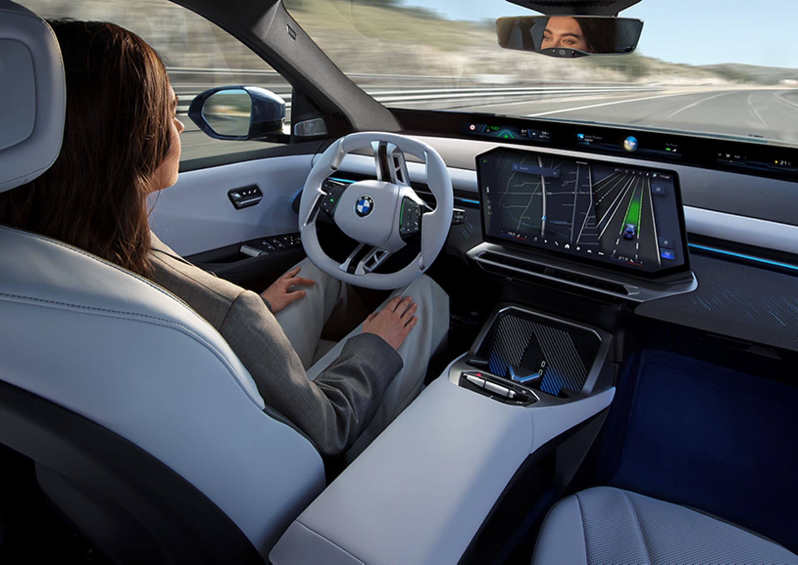
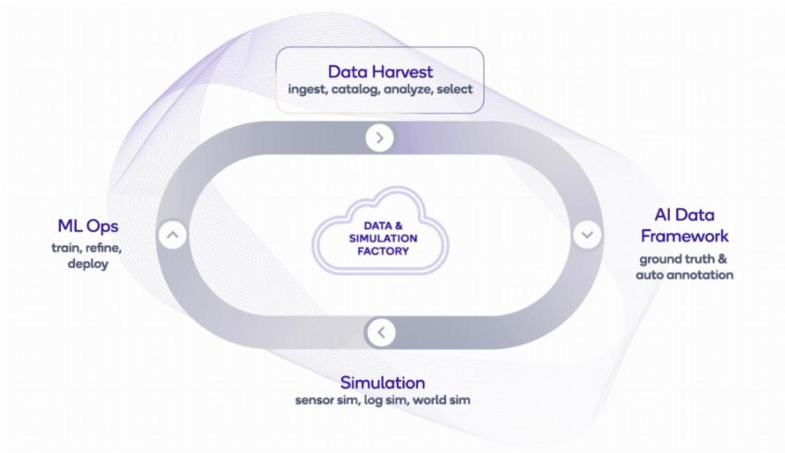
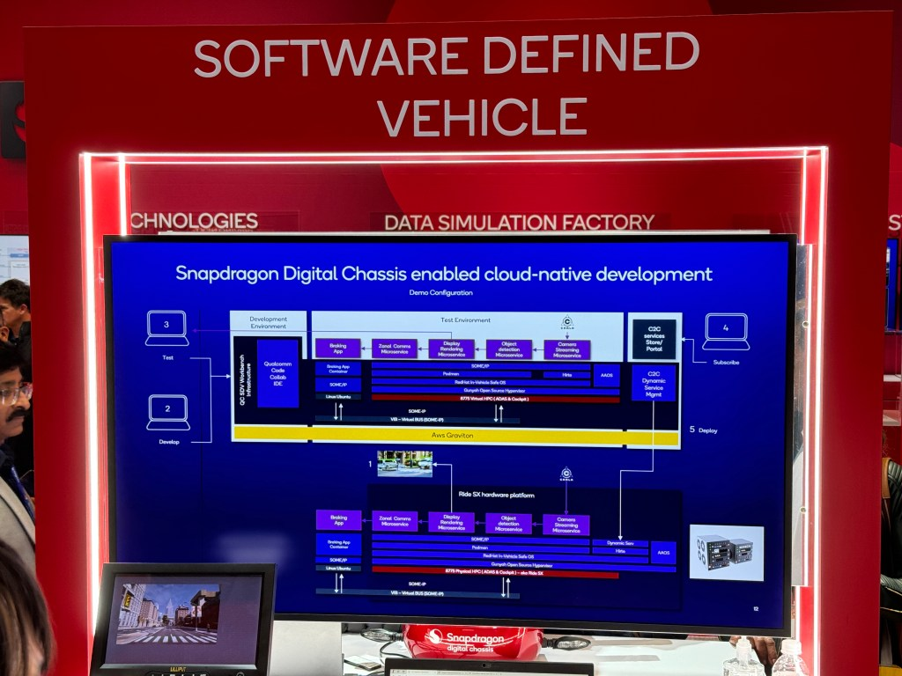

Qualcomm Technologies, Inc.は、世界中の人々にとって運転をより安全重視で便利なものにするため、Snapdragon Ride Pilotを発表した。
BMWと共同開発した新しいSnapdragon Ride ADソフトウェアスタックを搭載し、IAA Mobility 2025でBMW iX3において世界初公開された。
Snapdragon Ride Pilotにより、あらゆる自動車メーカーは、エントリーレベルの状況から高速道路や都市部の走行シナリオまで、ADAS機能をスケールさせられる。
「Automated driving for all: Snapdragon Ride Pilot system brings state-of-the-art safety and comfort features to drivers across the globe」、Rajat Sagar氏、Anshuman Saxena氏、2025年9月5日、Qualcomm Blogより。
ドイツのミュンヘンで開催されたIAA Mobility 2025で出てきた大きな新発表の一つが、QualcommとBMWによるSnapdragon Ride Pilotの共同発表だった。
自動車はQualcommにとって重要な成長分野であり、QualcommのCEOであるCristiano Amon氏が同社のInvestor Day 2021で示した多角化戦略の重要な柱でもある。この戦略の意図は、同社の事業を自動車、広義のIoT、そして現在ではAI PCやデータセンターへの初期的な動きも含むその他の領域へ広げることにある。
ここ数年、同社は主にインフォテインメント向けSnapdragon Digital Cockpitの成功と、ADASおよび自動運転向けSnapdragon Digital Rideの採用拡大によって成長してきた。Qualcommの同業他社が事業成長に苦戦するなか、Qualcommは2021年以降、おおむね前年比の売上成長を維持しており、自動車は同社の多角化戦略の中で最も成長の速いセグメントになっている。
2024年、Qualcommの自動車事業は29億ドルに達し、前年から55%増加した。

Snapdragon Ride Pilotは、QualcommとBMWの共同開発の成果であり、「アイズオン、ハンズフリー、高速道路および都市ナビゲーション、時速85マイルまでのマップ追従能力」を実現するシステム、つまりハードウェア、シリコン、ソフトウェアのスタックを作る取り組みである。
QualcommはSnapdragon Ride Pilotを、先進L2+自動運転向けのフルシステムソリューションとして位置付けている。
Snapdragon Ride Pilotは、今年10月に生産開始予定のBMWの新型iX3でデビューする。
Qualcommの自動車ソリューションポートフォリオであまり知られていない側面の一つが、Data & Simulation Factoryと呼ばれる領域である。これは、シミュレーション、AVトレーニング、AI OpsのためのQualcommネイティブなフレームワークである。
Data & Simulation Factoryは、現実世界との継続的な接点とグラウンドトゥルースの確立に不可欠なデジタルツインから、シミュレーション、モデル学習まで、自動運転システム開発のライフサイクル全体を支える。
簡単に言えば、このData & Simulation Factoryは、NVIDIAとその「AIファクトリー」の概念で見られるものを反映している。Snapdragon Ride PilotのData & Simulation Factoryは、たまたまドメイン特化型であり、自動運転システムの開発、継続的な保守、改善に向けられている。
Snapdragon Ride PilotのData & Simulation Factoryは、同社がQualcommネイティブなHPCインフラと説明するもの上で動作するようだ。具体的な情報は得られなかったが、Qualcommはシミュレーションワークロードとモデル学習を実行するため、データセンター向けのCloud AI 100 Ultra NPUを使っていると筆者は推測している。
これは重要である。QualcommがSnapdragon Ride Pilotに向けて、ハードウェア、ソフトウェア、データのフルスタックをつなぎ合わせるところまでかなり進んでいることを示しているからだ。2024年のCESでQualcommブースを見学した際、筆者はさまざまな構成要素がまとまりつつある様子を見ていた。QualcommはBMWとのパートナーシップを通じて大きく前進し、それを成熟させ、Snapdragon Ride Pilotという提供形態にまとめ上げた。

Qualcommによれば、Data & Simulation FactoryはAWS上でホストできる。なお、2024年時点でSnapdragon Digital Chassisの開発インフラはAmazonのGravitonインスタンス上で動いていた。
Snapdragon Ride Pilotの立ち上げにあたり、Qualcommは、顧客が利用するクラウドサービスプロバイダーを選べるよう、ホスティングパートナーの範囲を広げようとしていると説明した。選択肢という意味では、Data & Simulation Factoryはオンプレミスにも導入して実行できる。
興味深いことに、Qualcommは現在Data & Simulation Factoryに自社SoCを使っていると示唆した。サーバーチップを持っているのだろうか。Qualcommが最近、AIインフラに焦点を当ててデータセンター事業へ参入すると発表したことを踏まえると、Oryonコアを搭載したQualcomm CPUが登場するのは、ほぼ避けられない流れだろう。
疑いなく、そう見える。
Data & Simulation Factoryは、Qualcommの自動車プラットフォーム戦略にとって重要な基盤である。ただし、Snapdragon RideやSnapdragon Cockpit、そしてそれらを支えるシリコンといった、車両に紐づくより派手なDigital Chassis要素の陰に隠れがちだった。
しかし、自動車メーカーの視点から見ると、自動運転システムや先進L2+ ADASを設計し、構築し、進化させるには、ツールで支えられ、高速に進化するデジタル技術とAI技術によって加速される、管理すべきライフサイクル全体が関わることを理解する必要がある。
デジタルツイン、モデリング、シミュレーションという基盤に関しては、NVIDIAがDGX HPCコンピュート、Omniverse、現在のCosmos、さらに広範なAIモデルと開発者ツール群からなるフルスタックでよく知られている。
Qualcommもまた、Qualcommネイティブな自動運転システム開発スタックとライフサイクル資産を、かなり静かに構築しているのかもしれない。筆者の見方では、Snapdragon Ride Pilotは、BMWとの3年にわたる協業を通じてCES 2024で見たものを超える、次の進化段階を示している。
Data & Simulation Factoryによって可能になる開発ライフサイクルは、QualcommのSnapdragon Digital Chassisと組み合わさることで、Qualcommの自動車エコシステムを活性化し、顧客が自動運転システム開発の運用体制を確立するうえで重要な役割を果たすだろう。これはQualcommを、車向けのチップやモデムを売るだけの存在から大きく先へ進めるものであり、同社が40年前の創業以来持ち続けてきたDNAの一部である、エコシステム規模のイノベーション・フライホイールを生み出すうえで有利な位置に置く。